7. Skapa ett Adaptivt Kort för Beställning
Vi har nu en agent som kan hitta datorer. Nästa steg är att låta användaren beställa en av dem. För att göra detta snyggt och användarvänligt ska vi använda ett Adaptive Card. Det är ett litet formulär direkt i chatten där användaren kan välja en dator och skriva en kommentar.
7.1 Skapa Ämne för Beställning
Vi skapar ett separat ämne för själva beställningen för att hålla logiken ren.
-
Navigera till dina Ämnen i Copilot Studio.
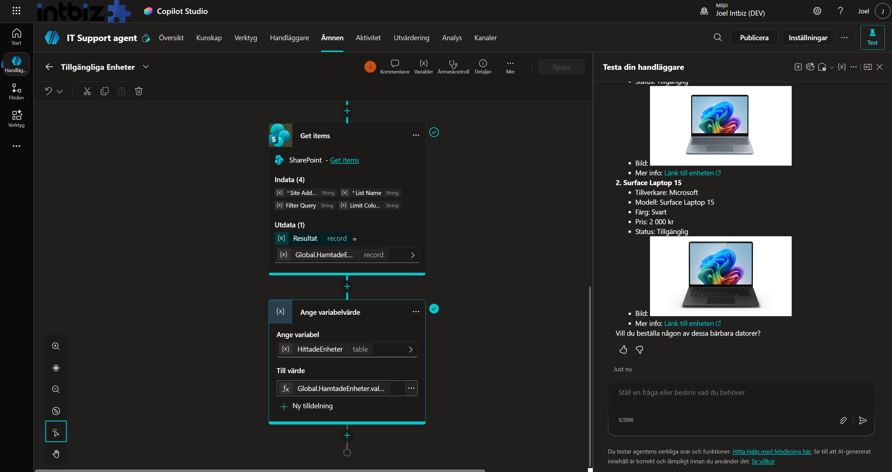
-
Välj + Lägg till ett ämne -> Från tom.
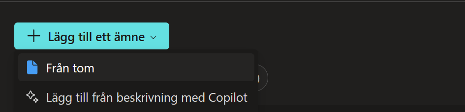
-
Döp ämnet till:
Begär enhet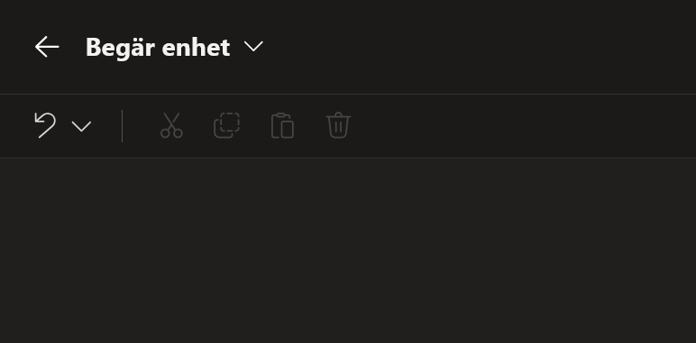
-
I rutan Beskrivning (under Utlösare), klistra in följande beskrivning:
Detta ämne hjälper användare att beställa en enhet när de svarar ja på frågan om de vill göra en beställning av en av de visade enheterna.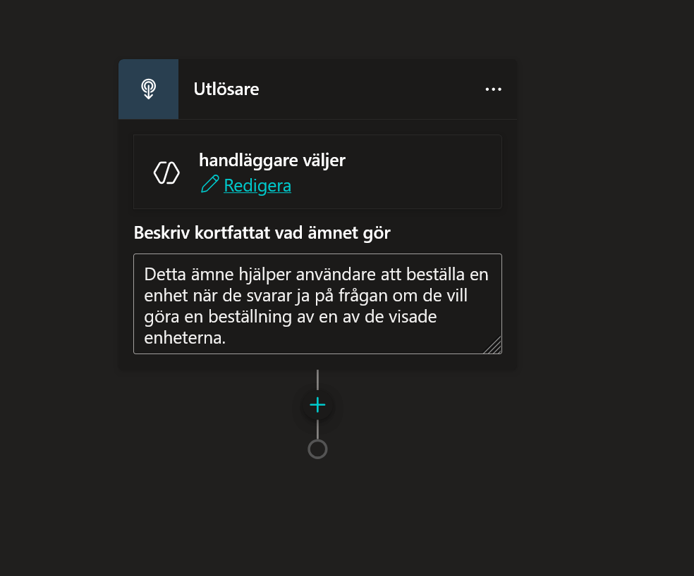
7.2 Bygga Kortet (Visuell redigerare)
Nu ska vi lägga till själva kortet.
- Klicka på plus-tecknet (+) under Utlösare-noden.
-
Välj Fråga med adaptivt kort.
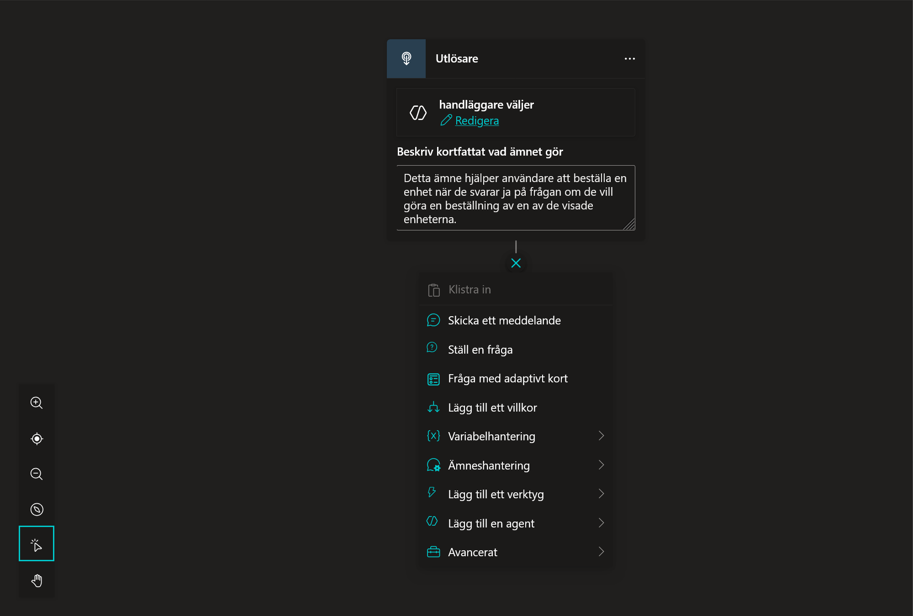
-
Klicka på de tre prickarna på kort-noden och välj Egenskaper.
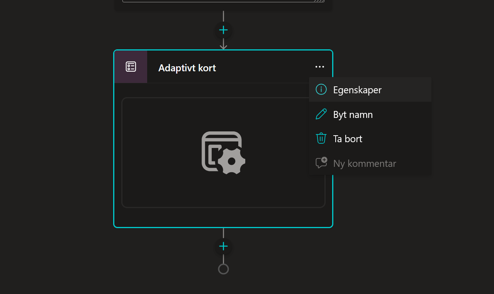
-
I panelen till höger, klicka på knappen Redigera adaptivt kort.
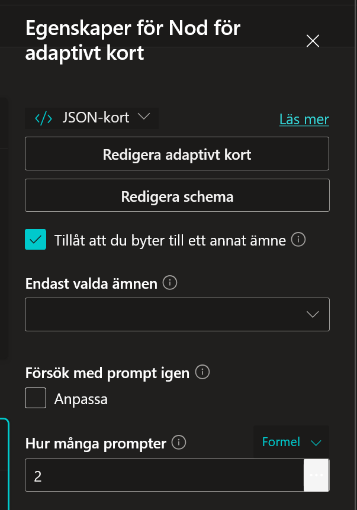
Testa verktyget (Valfritt men lärorikt)
Nu öppnas en stor editor. Till vänster har du komponenter (text, bilder, inputs) och i mitten ser du ditt kort.
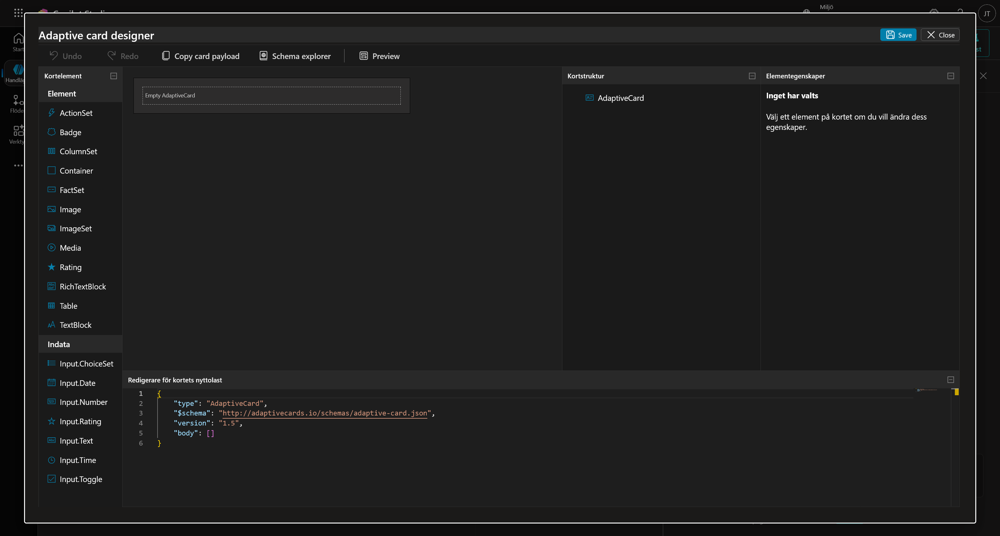
-
Prova att dra in ett TextBlock från vänstermenyn till kortet.
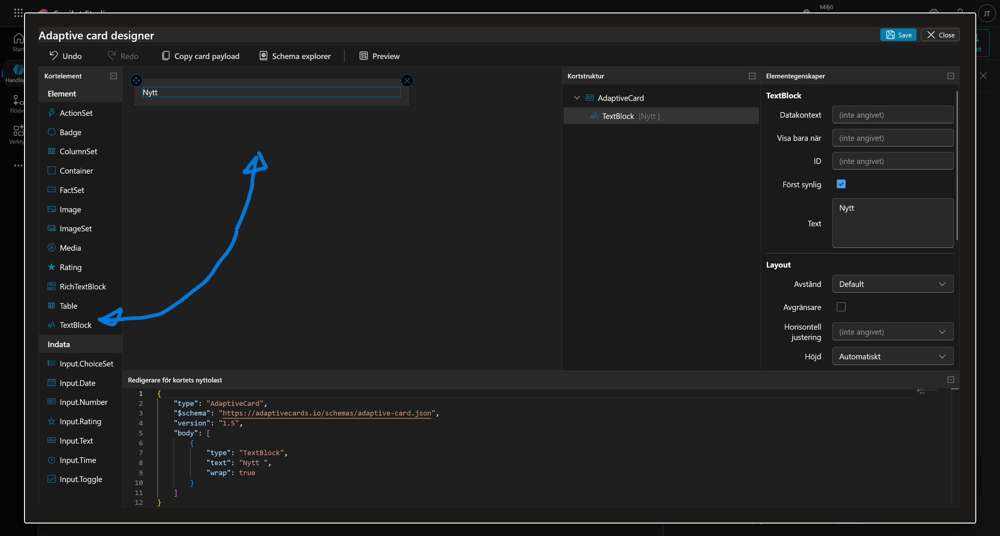
-
Testa att ändra texten till något annat, t.ex. "Tillgängliga enheter" i menyn till höger.
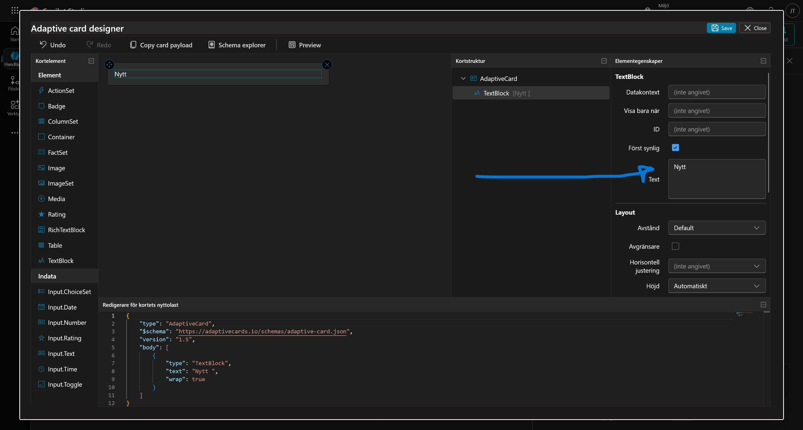
-
Ändra Horisontell justering till Centrerat.
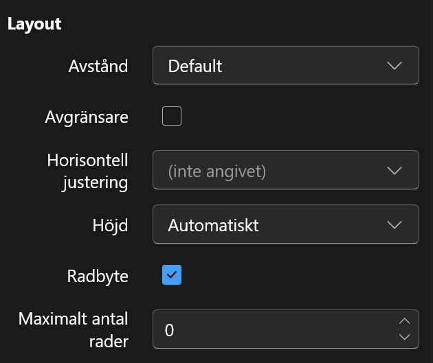
-
Prova att dra in en Input.ChoiceSet under texten.
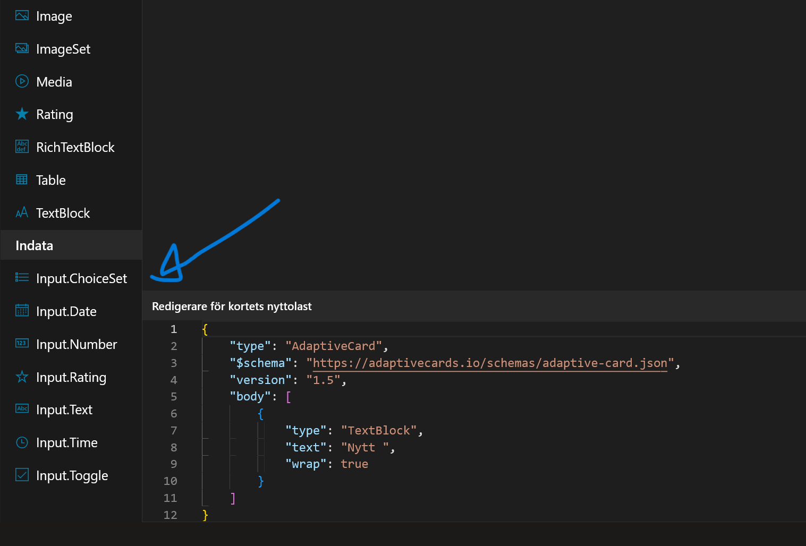
-
Ändra Stil till Expanderat för att se hur det ser ut som en lista med radioknappar.
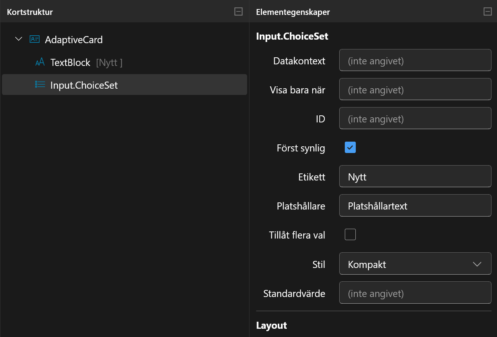
-
Klicka på Preview högst upp för att se hur det skulle se ut i chatten.
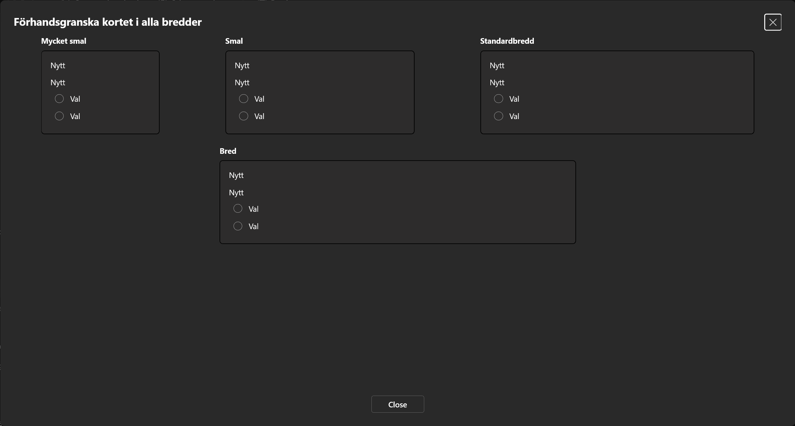
-
Klicka på Preview igen för att gå tillbaka.
7.3 Klistra in JSON (Snabbvägen)
Att bygga hela kortet för hand tar tid. Vi ska använda färdig kod (JSON) för att få en snygg grundstruktur.
-
Längst ner i fönstret ser du Redigerare för kortets nyttolast. (Dra upp kanten om den är liten).
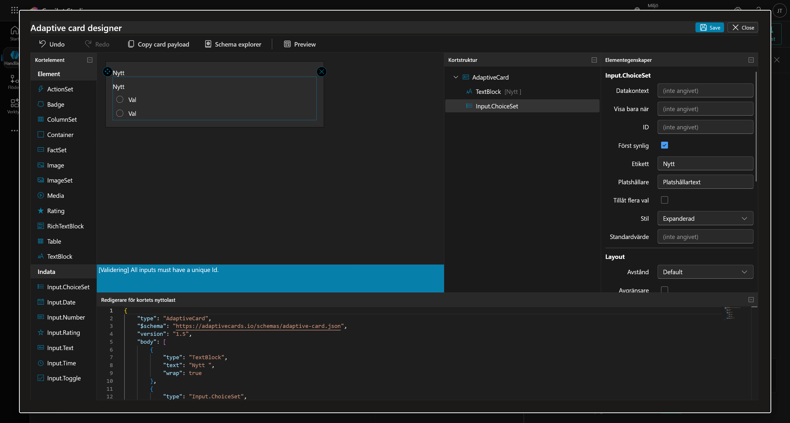
-
Radera allt som står i editorn.
-
Kopiera och klistra in följande kod:
{ "type": "AdaptiveCard", "$schema": "https://adaptivecards.io/schemas/adaptive-card.json", "version": "1.5", "backgroundImage": { "url": "https://adaptivecards.io/content/backgroundImage.png", "verticalAlignment": "Center" }, "body": [ { "type": "Container", "style": "emphasis", "bleed": true, "items": [ { "type": "TextBlock", "weight": "Bolder", "size": "Large", "wrap": true, "text": "Enhetsval", "horizontalAlignment": "Center" } ] }, { "type": "Container", "style": "default", "items": [ { "type": "TextBlock", "wrap": true, "size": "Medium", "text": "Vänligen välj vilken enhet du vill begära:" } ], "spacing": "None" }, { "type": "Container", "spacing": "None", "items": [ { "type": "Input.ChoiceSet", "id": "kortValdEnhetId", "style": "expanded", "choices": [ { "title": "Surface Laptop 13", "value": "1" }, { "title": "Surface Laptop 15", "value": "2" }, { "title": "Surface Studio", "value": "3" }, { "title": "Surface Pro", "value": "4" } ] } ] }, { "type": "Container", "spacing": "None", "style": "emphasis", "items": [ { "type": "TextBlock", "wrap": true, "text": "Ytterligare information" } ] }, { "type": "Input.Text", "id": "kortKommentar", "placeholder": "Vänligen ange eventuella specifika krav eller övriga kommentarer", "isMultiline": true, "spacing": "Small" }, { "type": "FactSet", "facts": [ { "title": "Typ av förfrågan", "value": "Ny enhet" }, { "title": "Svarstid:", "value": "3-5 arbetsdagar" } ], "spacing": "Small" } ], "actions": [ { "type": "Action.Submit", "title": "Skicka" } ] } -
Klicka på Preview för att se ditt snygga kort! Just nu är listan på datorer "Hårdkodad" (Surface Laptop 13, 15 etc). Det ska vi ändra på nu.
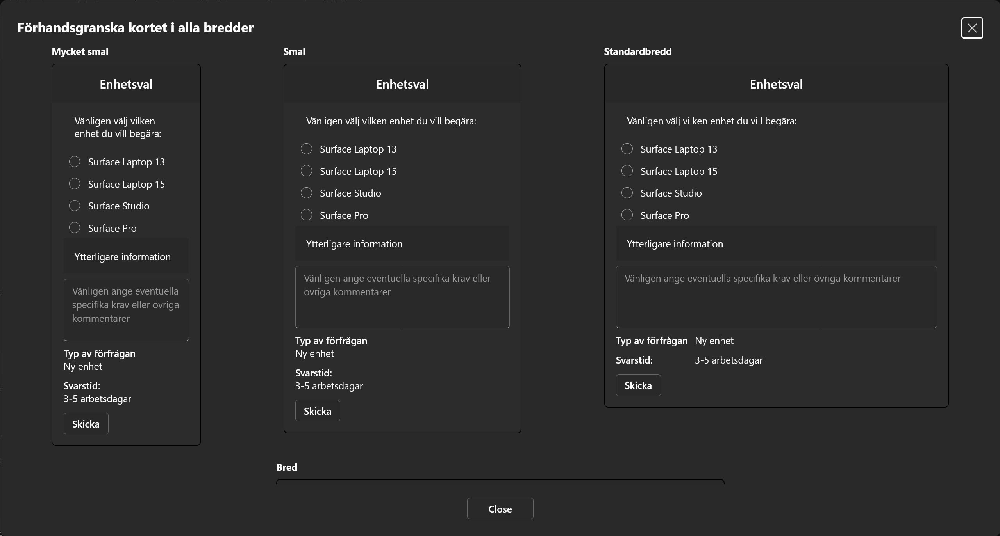
7.4 Göra kortet Dynamiskt (Power Fx)
Vi vill att listan i kortet ska baseras på vad vi faktiskt hittade i SharePoint (i föregående kapitel). För att göra det måste vi byta från statisk JSON till dynamisk Power Fx.
- Stäng Förhandsgranskningsläge.
-
Längst upp till höger i editor-fönstret (ovanför koden), klicka på JSON och ändra till Formel.
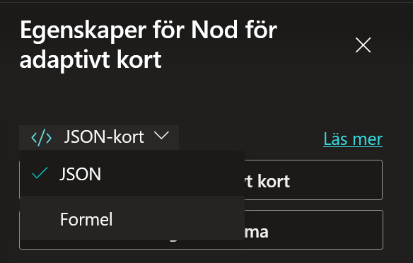
-
Klicka på Expandera-ikonen (pilarna) för att göra formelfältet större.
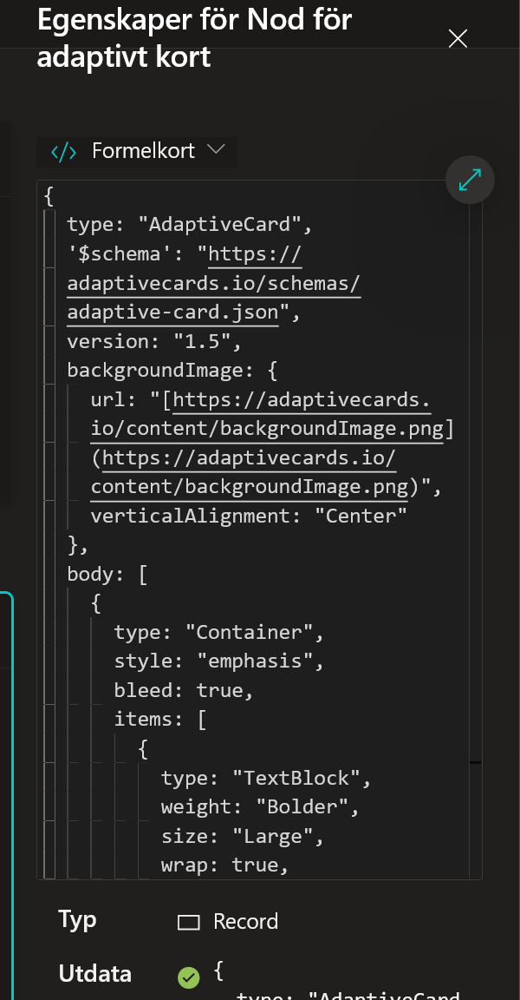
-
Radera all kod i fönstret.
-
Klistra in denna Power Fx-kod istället:
{ type: "AdaptiveCard", '$schema': "https://adaptivecards.io/schemas/adaptive-card.json", version: "1.5", backgroundImage: { url: "https://adaptivecards.io/content/backgroundImage.png", verticalAlignment: "Center" }, body: [ { type: "Container", style: "emphasis", bleed: true, items: [ { type: "TextBlock", text: "Enhetsval", weight: "Bolder", size: "Large", wrap: true, horizontalAlignment: "Center" } ] }, { type: "Container", style: "default", items: [ { type: "TextBlock", text: "Vänligen välj vilken enhet du vill begära:", wrap: true, size: "Medium" } ], spacing: "None" }, { type: "Container", spacing: "None", items: [ { type: "Input.ChoiceSet", id: "kortValdEnhetId", style: "expanded", choices: ForAll( Global.HamtadeEnheter.value, { title: If(IsBlank(Model), "Okänd modell", Model), value: If(IsBlank(ID), "NA", Text(ID)) } ) } ] }, { type: "Container", spacing: "None", style: "emphasis", items: [ { type: "TextBlock", text: "Ytterligare information", wrap: true }, { type: "Input.Text", id: "kortKommentar", placeholder: "Vänligen ange eventuella specifika krav eller övriga kommentarer", isMultiline: true, spacing: "Small" } ] }, { type: "Container", spacing: "Medium", items: [ { type: "FactSet", facts: [ { title: "Typ av förfrågan:", value: "Ny enhet" }, { title: "Svarstid:", value: "3 till 5 arbetsdagar" } ], spacing: "Small" } ] } ], actions: [ { type: "Action.Submit", title: "Skicka" } ] }Vad hände nu?
Titta på delen med
choices: ForAll(...). Istället för en fast lista säger vi nu: "Loopa igenom vår globala variabelGlobal.HamtadeEnheter.value. För varje rad, skapa ett val där titeln är modellnamnet och värdet är ID:t." Detta gör kortet levande! -
Kontrollera att du har en grön bock nere i hörnet (inga syntaxfel).
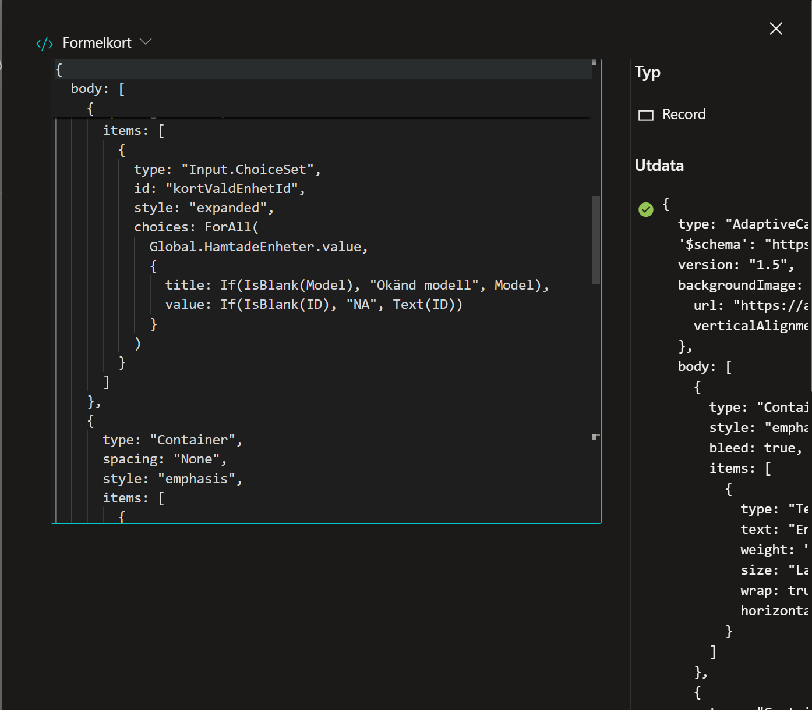
-
Klicka på Spara kort (eller stäng krysset om knappen saknas, det sparas ofta automatiskt) och stäng sedan det adaptiva kortets egenskaper.
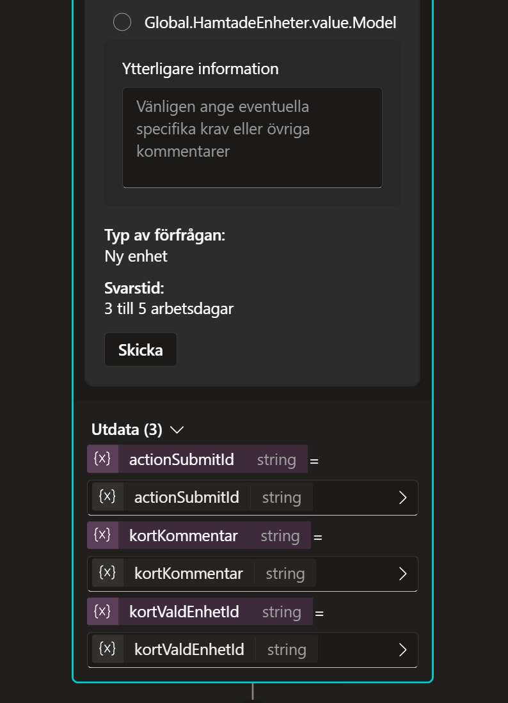
Viktigt: Utdatavariabler
Om du tittar längst ner i Egenskapspanelen för din kort-nod, ser du sektionen Utdata.
Här bör du se två variabler:
* kortValdEnhetId (Vilken enhet användaren valde)
* kortKommentar (Vad användaren skrev)
Dessa skapades automatiskt baserat på ID:n i koden vi klistrade in. Vi kommer att använda dem i nästa kapitel när vi skickar beställningen vidare till ett agentflöde.
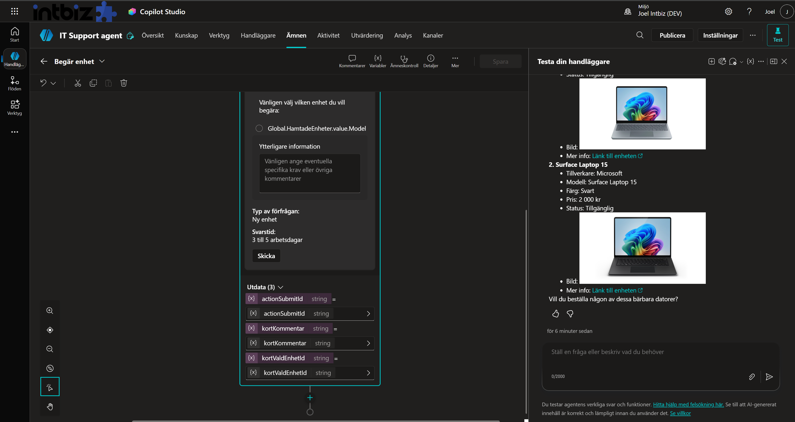
- Klicka Spara för att spara ditt ämne.
7.5 Uppdatera Agentens Instruktioner
Nu har vi ett ämne för att visa enheter (Tillgängliga Enheter) och ett för att beställa (Begär enhet). Vi måste lära agenten hur de hänger ihop.
-
Gå till fliken Översikt.
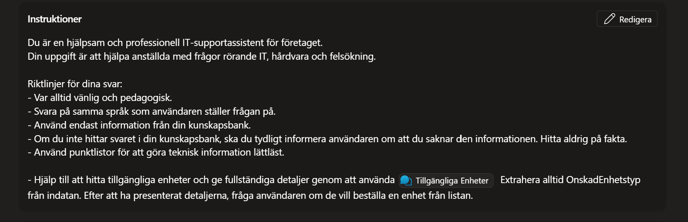
-
Vid Instruktioner, klicka på Redigera.
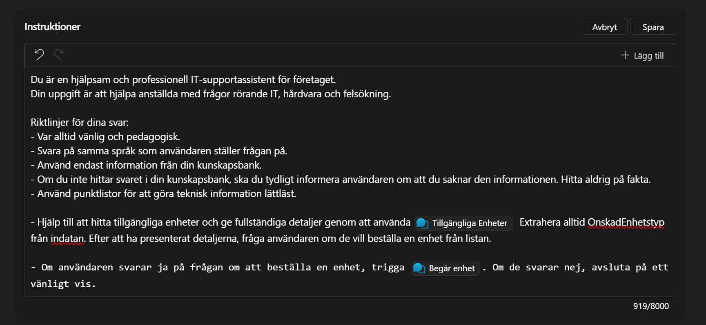
-
Leta upp raden du lade till sist. Vi ska uppdatera den så att den länkar vidare till vårt nya ämne.
Ändra den sista punkten till följande:
- Om användaren svarar ja på frågan om att beställa en enhet, trigga [Begär enhet]. Om de svarar nej, avsluta på ett vänligt vis. -
Viktigt: Du måste göra länkarna "blåa".
- Sudda ut
[Begär enhet]. Skriv/Begoch välj Begär enhet från listan.
- Sudda ut
-
Klicka Spara.

Testa flödet
Nu är det dags att se magin hända!
- Öppna Testa-panelen. Klicka på ikonen för Karta (Aktivitetskarta) och slå på Spåra mellan ämnen.
- Skriv:
Jag behöver en bärbar datorAgenten bör visa listan och fråga om du vill beställa. - Svara:
Ja tackNu ska agenten automatiskt hoppa över till ditt nya ämne Begär enhet och visa formuläret.
Snyggt!
Du har nu byggt ett dynamiskt formulär som anpassar sig efter vad som finns i lagret. I nästa kapitel ska vi se till att det faktiskt händer något när man klickar på "Skicka"!